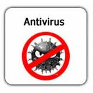
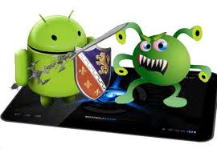
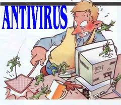

Definición de Antivirus |
¿Qué es un antivirus?" |

| Un antivirus es un programa informático que tiene el propósito de detectar y eliminar virus y otros programas perjudiciales antes o después de que ingresen al sistema.
Los virus, gusanos, troyanos, spyware son tipos de programas informáticos que suelen ejecutarse sin el consentimiento (e incluso, conocimiento) del usuario o propietario de un ordenador y que cumplen diversas funciones dañinas para el sistema. Entre ellas, robo y pérdida de información, alteración del funcionamiento, disrupción del sistema y propagación hacia otras computadoras.
Los antivirus son aplicaciones de software que han sido diseñados como medida de protección y seguridad para resguardar los datos y el funcionamiento de sistemas informáticos caseros y empresariales de aquellas otras aplicaciones conocidas comúnmente como virus o malware que tienen el fin de alterar, perturbar o destruir el correcto desempeño de las computadoras. |
Métodos de Protección |

| Existen numerosos medios para combatir el problema; Sin embargo, a medida que nuevos programas y sistemas operativos se introducen en el mercado, más difícil es tener controlados a todos y más sencillo va a ser que a alguien se le ocurran nuevas formas de infectar sistemas.
Los métodos para contener o reducir los riesgos asociados a los virus pueden ser los denominados activos o pasivos.
Tipos de vacunas
- Sólo detección: Son vacunas que sólo actualizan archivos infectados sin embargo no pueden eliminarlos o desinfectarlos.
- Detección y desinfección: son vacunas que detectan archivos infectados y que pueden desinfectarlos.
- Detección y aborto de la acción: son vacunas que detectan archivos infectados y detienen las acciones que causa el virus.
- Comparación por firmas: son vacunas que comparan las firmas de archivos sospechosos para saber si están infectados.
- Comparación de firmas de archivo: son vacunas que comparan las firmas de los atributos guardados en tu equipo.
- Por métodos heurísticos: son vacunas que usan métodos heurísticos para comparar archivos.
- Invocado por el usuario: son vacunas que se activan instantáneamente con el usuario.
- Invocado por la actividad del sistema: son vacunas que se activan instantáneamente por la actividad del sistema operativo.
|
Funciones de los Antivirus | <

| En el proceso del antivirus para poder eliminar los virus se dan rutinas de detención, eliminación y reconstrucción de los archivos y las áreas infectadas del sistema afectado, en este caso de nuestras computadoras. Los antivirus tienen tres importantes funciones que son detectar vacunar y eliminar. La vacuna es un programa instalado en la memoria para que forme un filtro que entre los programas ejecutados ya sea para leerlos o copiarlos, El detector es el que examina archivo por archivo dentro del disco duro que tienen un control y codificación para detectar los códigos virales que permitan capturarlos y detenerlos. Estos son los tres puntos básicos que deben de estar dentro de un antivirus que pueda cumplir las funciones básicas para la detección de los virus.
También se debe de tomar en cuenta que los antivirus son programas que van a funcionar si son configurados correctamente y que es una herramienta que ayuda al usuario con un rendimiento eficaz a un 100% de los casos, aunque no podemos decir que se una protección total ni definitiva. |